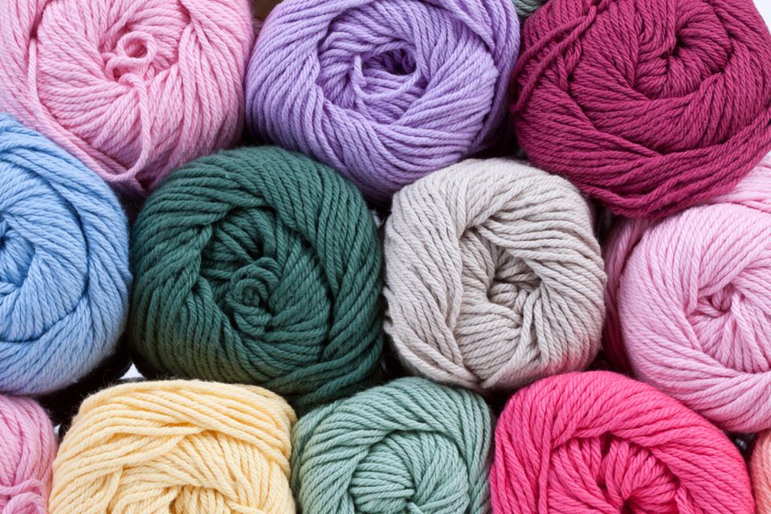

Crochet is celebrated not only for its simplicity and accessibility but also for its therapeutic benefits. Many enthusiasts find the repetitive motion of stitching to be calming and meditative, making it a popular hobby for reducing stress and anxiety. Additionally, crochet projects can be highly portable, allowing crafters to work on their creations virtually anywhere. The craft also fosters a strong sense of community, with numerous online forums, social media groups, and local clubs where crocheters can share their work, seek advice, and draw inspiration from one another. Whether you are looking to create practical items, artistic pieces, or simply enjoy a relaxing pastime, crochet offers a rewarding and creative outlet for people of all ages and skill levels.
